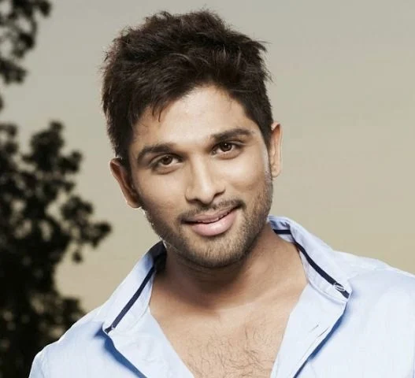

Allu Arjun (born 8 April 1982) is an Indian actor who predominantly
works in Telugu films. He is one of the highest paid actors in South India
and is also known for his dancing. He is a recipient of several awards,
including five Filmfare Awards South and five Nandi Awards.
He then starred in Puri Jagannadh's action film Desamuduru in which he played
the role of Bala Govindam, a fearless journalist who falls for a woman with a
darker past.[38] The film was a commercial hit, fetching him a Santosham Film Award
, a CineMAA Award and a nomination for the Filmfare Award for Best Actor – Telugu.
The same year, he made his second cameo appearance alongside Chiranjeevi, in the
song "Jagadeka Veerudiki" from the film Shankar Dada Zindabad.
creby mz